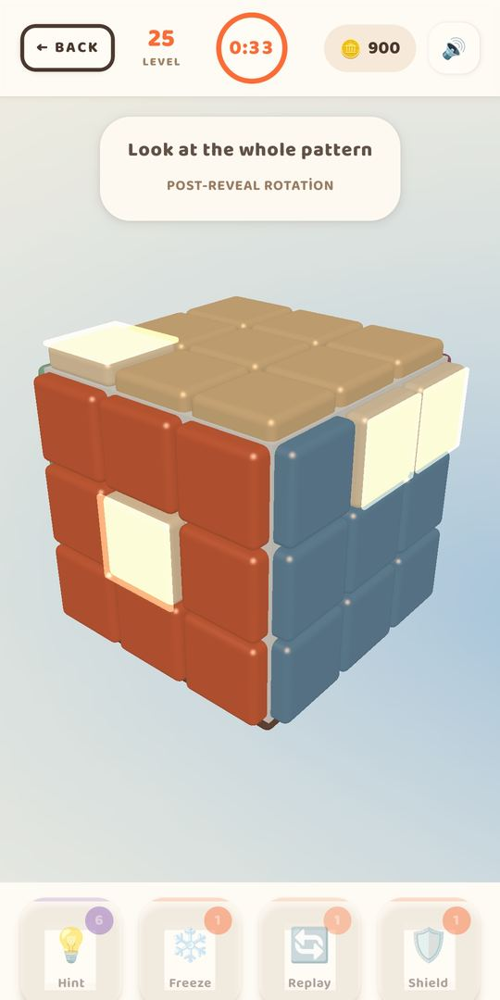
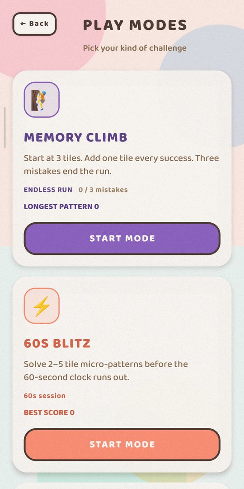
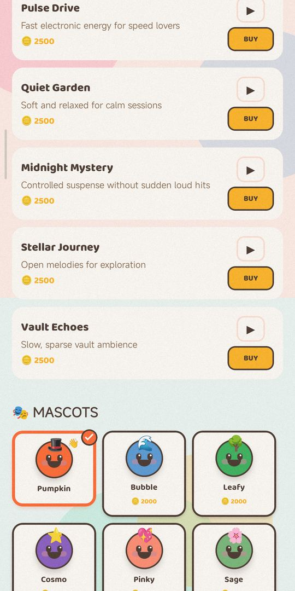
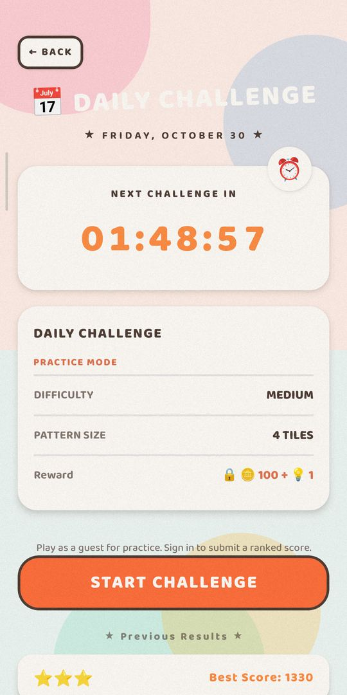

iPhone, iPad ve Android için ücretsiz hafıza oyunu · Baripas Studio · Son güncelleme 5 Kasım 2026




Cube Pattern, dönen bir 3D küp etrafında kurulu bir hafıza oyunudur. Eşleştirme yerine karelerin küpün hangi yüzünde ve nerede parladığını ezberlersin; sonra deseni doğru sırayla yeniden kurarsın. Sakin, tek oyunculu bir beyin egzersizi: akış yok, sohbet yok, kendi rekorun dışında baskı yok.
| Oyun | Cube Pattern — 3D uzamsal hafıza bulmacası |
|---|---|
| Geliştirici | Baripas Studio (Türkiye) · contact@baripas.studio |
| Platformlar | iPhone ve iPad (iOS/iPadOS 16+), Android 8.0+ |
| Fiyat | Ücretsiz indirme. İsteğe bağlı premium ve kozmetik satın alımlar; ödüllü reklamlar isteğe bağlı |
| Çevrimdışı | Hikâye bölümleri ve modlar internet olmadan oynanır |
| Diller | Türkçe, English, Deutsch, Español, Français, Português |
| Oyuncu | Tek oyunculu; isteğe bağlı arkadaşlar, sıralama ve ghost meydan okumaları |
| Sürüm | 1.0.0 · ilk herkese açık sürüm, Kasım 2026 |
Oyun ücretsizdir. İsteğe bağlı satın alımlar arasında premium yükseltme (reklamsız, tüm temalar açık, sınırsız can, premium seviyeler ve günlük meydan okumada 3× ödül), kozmetik koleksiyonlar, başlangıç paketi, ipucu paketleri ve altın paketleri bulunur. Fiyatlar App Store ve Google Play tarafından bölgesel olarak belirlenir; bulunduğun bölgedeki fiyat için mağaza sayfası esastır. Satın alımları geri yükleme uygulama içindeki ödeme ekranından yapılır.
Cube Pattern altı dilde tamamen yerelleştirilmiştir: Türkçe, İngilizce, Almanca, İspanyolca, Fransızca ve Portekizce. Günlük meydan okuma tarihleri UTC kullanır; böylece herkes aynı gün aynı deseni oynar.
Evet, indirmesi de oynaması da ücretsizdir. Satın alımlar isteğe bağlıdır ve ödüllü reklamlar kullanıcı onayıyla gösterilir.
Evet. Hikâye bölümleri ve modlar çevrimdışı çalışır. Giriş, bulut eşitleme, sıralama, arkadaşlar ve etkinlikler internet ister.
Evet, iPad ve Android tabletlerde çalışır. Oyun dikey (portre) odaklıdır.
Hayır. Misafir olarak oynayabilirsin; giriş yalnızca ilerlemeyi eşitlemek, sıralamalı günlük skoru göndermek ve sosyal özellikler için gerekir.
10 bölümde 100 seviye; ayrıca günlük meydan okuma ve dört mod.
İsteğe bağlı aylık ve yıllık premium abonelik ile tek seferlik ömür boyu açma seçeneği vardır.
Resmî Cube Pattern uygulaması Baripas Studio tarafından yayınlanır. App Store ve Google Play bağlantıları bu sayfadadır.
English · Türkçe · Deutsch · Español · Français · Português · Guide · Changelog · llms.txt